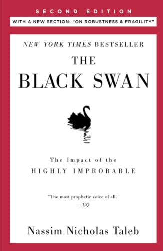

The Black Swan
The Black Swan is a standalone book in Nassim Nicholas Taleb’s landmark Incerto series, an investigation of opacity, luck, uncertainty, probability, human error, risk, and decision-making in a world we don’t understand. The other books in the series are Fooled by Randomness, Antifragile, Skin in the Game, and The Bed of Procrustes.
A black swan is a highly improbable event with three principal characteristics: It is unpredictable; it carries a massive impact; and, after the fact, we concoct an explanation that makes it appear less random, and more predictable, than it was. The astonishing success of Google was a black swan; so was 9/11. For Nassim Nicholas Taleb, black swans underlie almost everything about our world, from the rise of religions to events in our own personal lives.